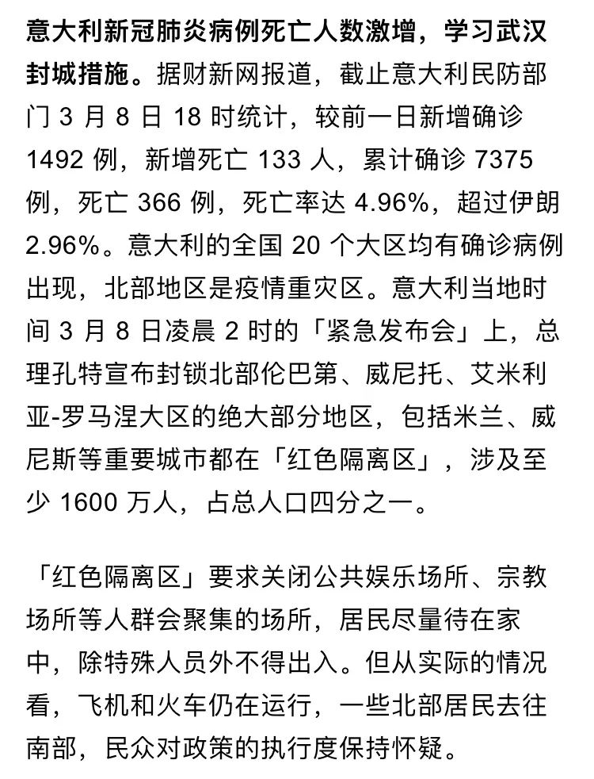
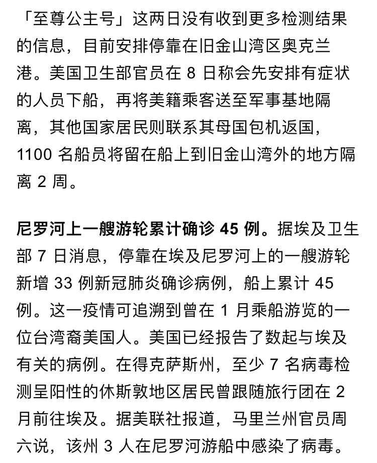
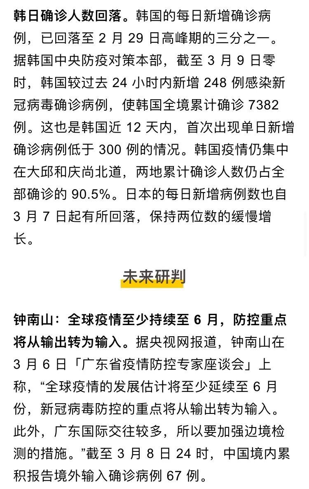
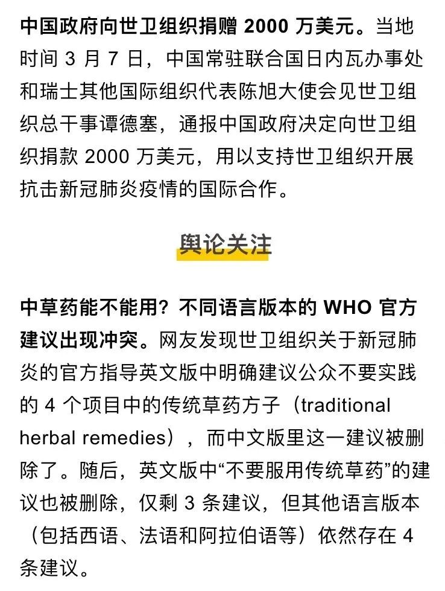

国内出现至少 5 例海外输入病例，世卫组织将疫情等级提至最高，以及其他 20 条疫情新闻
原文链接 备份链接 根据丁香医生实时数据，截至 3 月 1 日 20 时，全国现存确诊病例 34959 例，累计确诊病例 79972 例，现存疑似病例 851 例。其中，重症病例 7365 例，死亡病例 2873 例， …

根据丁香医生，截至 3 月 9 日 22:16 时，全国现存确诊病例 18957 例，累计确诊病例 80905 例，现存疑似病例 421 例。其中，重症病例 5111 例，死亡病例 3124 例，累计治愈病例 58824 例。
截至 3 月 9 日，除中国以外，全球现存确诊病例为 25984 例，累计确诊病例 30048 例，死亡 753 例，累计治愈 3311。除中国外，目前全球有 97 个国家出现了新冠肺炎确诊病人。










文中所有新闻和消息来源可通过下方链接查看：https://docs.google.com/document/d/1HjYdVnv7XyvP-e_ncOV4Gu-smyObp72E22yxGKJbfHg/edit《新型冠状病毒肺炎每日疫情播报》，可复制链接后科学上网打开
原文链接 备份链接 根据丁香医生实时数据，截至 3 月 1 日 20 时，全国现存确诊病例 34959 例，累计确诊病例 79972 例，现存疑似病例 851 例。其中，重症病例 7365 例，死亡病例 2873 例， …
原文链接 备份链接 根据丁香医生实时数据，截至 2 月 28 日 20 时，全国现存确诊病例 39859 例，累计确诊病例 78926 例，现存疑似病例 2308 例。其中，重症病例 7952 例，死亡病例 2791 例， …
原文链接 备份链接 根据丁香医生实时数据，截至 2 月 26 日 20 时，全国现存确诊病例 45448 例，累计确诊病例 78195 例，现存疑似病例 2491 例。其中，重症病例 8752 例，死亡病例 2718 例， …
原文链接 备份链接 国家卫健委网站 澎湃新闻记者 马作鹏 2月18日0—24时，31个省（自治区、直辖市）和新疆生产建设兵团报告新增确诊病例1749例，新增重症病例236例，新增死亡病例136例（湖北132例，黑龙江、山东、广东、贵州各1 …
原文链接 备份链接 所有的鱼现在同步在 allthefishnews.wordpress.com 更新并可通过邮件订阅。你可以复制上方链接浏览器打开或点击 阅读原文 获取订阅链接。 根据丁香医生实时数据，截至 2020 年 2 月 16 …